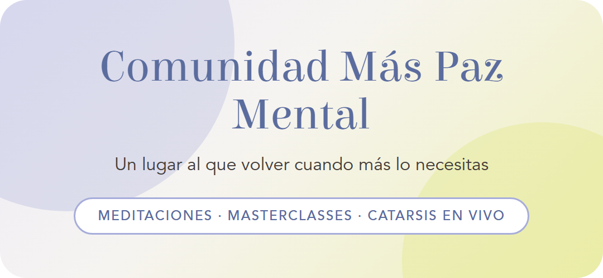
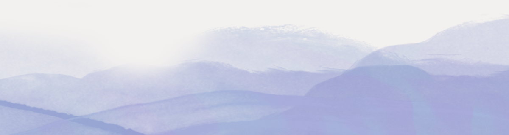

Hay una frase que he escuchado incontables veces cuando alguien habla de su familia. | |||||||||||||||||
"Mi relación más complicada es con mi mamá." | |||||||||||||||||
Casi nunca llega con rabia, {{contact.first_name}}. | |||||||||||||||||
Llega en voz baja, con culpa, y con una disculpa pegada atrás: "pero yo la amo, ¿eh?". | |||||||||||||||||
Quizás tú la pensaste alguna vez y nunca la dijiste: | |||||||||||||||||
🟣 "Cuelgo el teléfono con un peso que no sé nombrar." 🟣 "Le pedí algo con cariño y lo tomó como un rechazo." 🟣 "Vuelvo a sentirme de doce años cada vez que me habla así." 🟣 "Hay cosas que nunca le he podido decir." | |||||||||||||||||
Y debajo de todas, la misma duda. | |||||||||||||||||
¿Se puede amar muchísimo a tu mamá y, al mismo tiempo, haber salido lastimada de esa relación? | |||||||||||||||||
Sí. | |||||||||||||||||
Yo amo profundamente a mi mamá, y al mismo tiempo había cosas que ella hacía, sin darse cuenta y sin mala intención, que me dolían mucho. | |||||||||||||||||
Durante años no supe cómo decírselo. | |||||||||||||||||
En mi familia, un límite de un hij@ hacia su mamá no se leía como cuidado ni como amor: se sentía como distancia, como irrespeto, como ser malagradecida. | |||||||||||||||||
Así que me callaba. | |||||||||||||||||
Y el dolor no se fue por eso. | |||||||||||||||||
Nada desaparece solo porque nadie lo nombra. | |||||||||||||||||
A eso que se queda ahí, sin decir, le llamamos herida materna: | |||||||||||||||||
| |||||||||||||||||
Sanarla es posible, y quiero ser honesta contigo: toma tiempo y no avanza en línea recta. | |||||||||||||||||
Es un camino largo, con conversaciones incómodas, intentos fallidos y malentendidos. | |||||||||||||||||
También es liberador. | |||||||||||||||||
Por eso, este mes en la Comunidad Más Paz Mental vamos a trabajar: | |||||||||||||||||
✨ Sanar la herida materna | |||||||||||||||||
Para que puedas querer a tu mamá sin abandonarte a ti. | |||||||||||||||||
| |||||||||||||||||
 | |||||||||||||||||
Esta relación no se ordena en una tarde. | |||||||||||||||||
Y tampoco hace falta ordenarla sola: la Comunidad Más Paz Mental es el espacio que creé para acompañar procesos como este, mes a mes, con herramientas que puedes usar en tu día a día y con personas que están revisando algo parecido. | |||||||||||||||||
Es un espacio psicoeducacional, con acompañamiento profesional, y no un proceso de terapia individual. | |||||||||||||||||
Aquí podrás: | |||||||||||||||||
→ Bajar el ruido con las meditaciones del mes, para esos días en que la cabeza no para después de una llamada. → Aprender la herramienta en las masterclasses en vivo, con ejemplos de conversaciones reales. → Hablar de lo tuyo en las catarsis con especialistas y recibir una mirada profesional sobre tu caso. → Dejar de cargarlo sola, acompañada de personas que están revisando la misma relación que tú. | |||||||||||||||||
| |||||||||||||||||
Querer a tu mamá y cuidarte a ti caben en la misma vida. | |||||||||||||||||
Nos vemos dentro, | |||||||||||||||||
 |